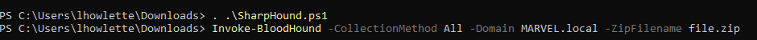

Bloodhound essentailly downloads the data on the AD and displays it in a graph
Install
open neo4j
syntax > sudo neo4j console
Navigate to the link
Login in with
neo4j
neo4j
change passsword
New terminal
syntax > bloodhound
this will open a browser
log in with the neo4j creds
Now we need an invoker to get tthe data
https://bloodhound.readthedocs.io/en/latest/data-collection/sharphound.html
https://github.com/BloodHoundAD/SharpHound
https://github.com/puckiestyle/powershell/blob/master/SharpHound.ps1
As with PowerView. GEt teh file onto the victim machine then run



Move the Zip back to your attacker
upload the file to bloodhound > it can remain zipped
I had to use the new SharpHound.exe !!!!!
https://github.com/BloodHoundAD/BloodHound/blob/master/Collectors/SharpHound.exe
GRAPHICAL OUTPUTS THE NETWORK>> SO PRETTY!